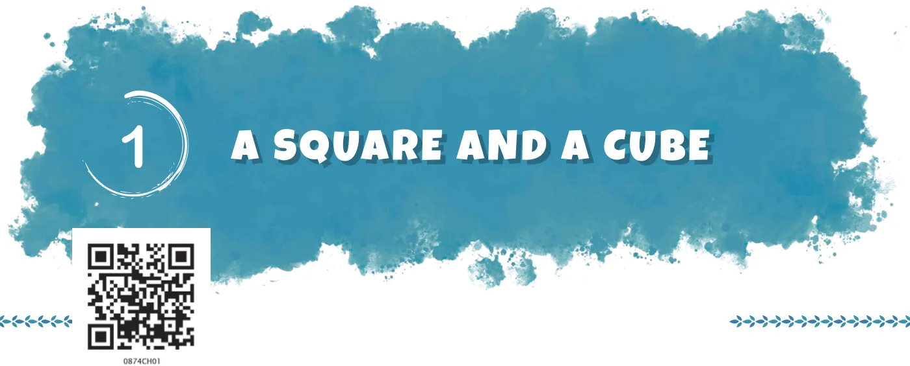
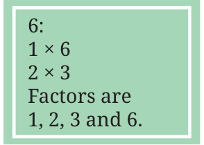
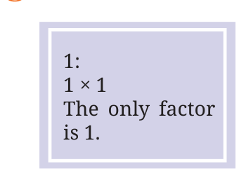
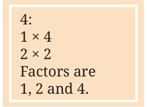
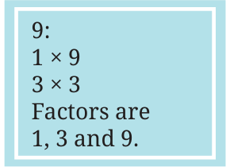

<!DOCTYPE html>
<html lang="en">
<head>
<meta charset="UTF-8">
<meta name="viewport" content="width=device-width,initial-scale=1">
<title>Chapter opener — A Square and a Cube</title>
<meta name="description" content="Class 8 Mathematics · Part 1 · A Square and a Cube · Chapter opener">
<link rel="icon" href="data:image/svg+xml,<svg xmlns='http://www.w3.org/2000/svg' viewBox='0 0 100 100'><text y='.9em' font-size='90'>📘</text></svg>">
<link rel="stylesheet" href="../../../assets/book.css">
<link rel="stylesheet" href="https://cdn.jsdelivr.net/npm/katex@0.16.11/dist/katex.min.css" crossorigin="anonymous">
</head>
<body>
<header class="topbar">
<div class="topbar-in">
  <div class="crumb">
    <span class="c1"><a href="../../../index.html">Library</a> · <a href="../../index.html">Class 8 Mathematics · Part 1</a></span>
    <span class="c2">A Square and a Cube · Chapter opener</span>
  </div>
  <span class="tb-btn" aria-disabled="true">←</span>
  <details class="drawer"><summary class="tb-btn" title="Sections in this chapter">☰</summary>
<div class="drawer-panel"><div class="dh">A Square and a Cube</div><a href="../01-chapter-opener/index.html" aria-current="page">Chapter opener</a><a href="../02-square-numbers-1.1/index.html">1.1 Square Numbers</a><a href="../03-patterns-and-properties-of-perfect-squares/index.html">Patterns and Properties of Perfect Squares</a><a href="../04-perfect-squares-and-odd-numbers/index.html">Perfect Squares and Odd Numbers</a><a href="../05-perfect-squares-and-triangular-numbers/index.html">Perfect Squares and Triangular Numbers</a><a href="../06-square-roots/index.html">Square Roots</a><a href="../07-figure-it-out/index.html">Figure it Out</a><a href="../08-cubic-numbers-1.2/index.html">1.2 Cubic Numbers</a><a href="../09-taxicab-numbers/index.html">Taxicab Numbers</a><a href="../10-perfect-cubes-and-consecutive-odd-numbers/index.html">Perfect Cubes and Consecutive Odd Numbers</a><a href="../11-cube-roots/index.html">Cube Roots</a><a href="../12-successive-differences/index.html">Successive Differences</a><a href="../13-a-pinch-of-history-1.3/index.html">1.3 A Pinch of History</a><a href="../14-figure-it-out/index.html">Figure it Out</a><a href="../15-summary/index.html">SUMMARY</a><a href="../16-figure-it-out/index.html">Figure it Out</a><a href="../17-figure-it-out/index.html">Figure it Out</a></div></details>
  <a class="tb-btn" data-nav="next" href="../../01-a-square-and-a-cube/02-square-numbers-1.1/index.html" title="1.1 Square Numbers">→</a>
  <button class="tb-btn" data-theme-toggle title="Toggle light / dark" aria-label="Toggle light or dark theme">◐</button>
</div>
<div class="progress"><span style="width:0.7%"></span></div>
</header>
<main class="wrap">
<div class="sec-head">
  <p class="eyebrow"><a href="../index.html">Chapter 1 · A Square and a Cube</a></p>
  <h1>Chapter opener</h1>
  <p class="sec-meta">Textbook pages 1–3 · 10 figures</p>
</div>
<article class="prose">
<figure class="fig wide"></figure>
<p>Queen Ratnamanjuri had a will written that described her fortune of ratnas (precious stones) and also included a puzzle. Her son Khoisnam and their 99 relatives were invited to the reading of her will. She wanted to leave all of her ratnas to her son, but she knew that if she did so, all their relatives would pester Khoisnam forever. She hoped that she had taught him everything he needed to know about solving puzzles. She left the following note in her will - “I have created a puzzle. If all 100 of you answer it at the same time, you will share the ratnas equally. However, if you are the first one to solve the problem, you will get to keep the entire inheritance to yourself. Good luck.” The minister took Khoisnam and his 99 relatives to a secret room in the mansion containing 100 lockers. The minister explained - “Each person is assigned a number from 1 to 100.</p>
<ul class="qlist">
<li><span class="mk">•</span><span class="lt">Person 1 opens every locker.</span></li>
<li><span class="mk">•</span><span class="lt">Person 2 toggles every 2nd locker (i.e., closes it if it is open, opens</span></li>
</ul>
<p>it if it is closed).</p>
<ul class="qlist">
<li><span class="mk">•</span><span class="lt">Person 3 toggles every 3rd locker (3rd, 6th, 9th, … and so on).</span></li>
<li><span class="mk">•</span><span class="lt">Person 4 toggles every 4th locker (4th, 8th, 12th, … and so on).</span></li>
</ul>
<p>This continues until all 100 get their turn. In the end, only some lockers remain open. The open lockers reveal the code to the fortune in the safe.”</p>
<p>Before the process begins, Khoisnam realises that he already knows which lockers will be open at the end. How did he figure out the answer? Hint: Find out how many times each locker is toggled.</p>
<figure class="fig wide"></figure>
<p>If a locker is toggled an odd number of times, it will be open. Otherwise, it will be closed. The number of times a locker is toggled is the same as the number of factors of the locker number. For example, for locker #6, Person 1 opens it, Person 2 closes it, Person 3 opens it and Person 6 closes it. The numbers 1, 2, 3, and 6 are factors of 6. If the number of factors is even, the locker will be toggled by an even number of people and it will eventually be closed. Note that each factor of a number has a ‛partner factor’ so that the product of the pair of factors yields the given number. Here, 1 and 6 form a pair of partner factors of 6, and 2 and 3 form another pair. Does every number have an even number of factors?</p>
<figure class="fig side-fig"></figure>
<figure class="fig"></figure>
<figure class="fig"></figure>
<figure class="fig side-fig"></figure>
<p>We see in some cases, like \(2 \times 2\), that the numbers in the pair are the same. Can you use this insight to find more numbers with an odd number of factors? For instance, 36 has a factor pair \(6 \times 6\) where both numbers are 6. Does this number have an odd number of factors? If every factor of 36 other than 6 has a different factor as its partner, then we can be sure that 36 has an odd number of factors. Check if this is true. Hence all the following numbers have an odd number of factors -</p>
<div class="mathblock"><p>\(1 \times 1\), \(2 \times 2\), \(3 \times 3\), \(4 \times 4\), ...</p></div>
<p>A number that can be expressed as the product of a number with itself is called a square number, or simply a square. The only numbers that have an odd number of factors are the squares, because they each have one factor which, when multiplied by itself, equals the number. Therefore, every locker whose number is a square will remain open.</p>
<figure class="fig wide"></figure>
<figure class="fig wide"></figure>
<p>Write the locker numbers that remain open.</p>
<p>Khoisnam immediately collects word clues from these 10 lockers and reads, “The passcode consists of the first five locker numbers that were touched exactly twice.”</p>
<p>Which are these five lockers? The lockers that are toggled twice are the prime numbers, since each prime number has 1 and the number itself as factors. So, the code is 2-3-5-7-11.</p>
</article>
<nav class="pager"><span></span><a class="nx" data-nav="next" href="../../01-a-square-and-a-cube/02-square-numbers-1.1/index.html"><span class="dir">Next →</span><span class="t">1.1 Square Numbers</span><span class="ch">A Square and a Cube</span></a></nav>
</main><footer class="site">Generated from the source textbook PDFs · text, figures and exercises belong to their respective publishers.</footer><script defer src="https://cdn.jsdelivr.net/npm/katex@0.16.11/dist/katex.min.js" crossorigin="anonymous"></script>
<script defer src="https://cdn.jsdelivr.net/npm/katex@0.16.11/dist/contrib/auto-render.min.js" crossorigin="anonymous"
  onload="renderMathInElement(document.body,{delimiters:[
    {left:'\\(',right:'\\)',display:false},
    {left:'$$',right:'$$',display:true},
    {left:'\\[',right:'\\]',display:true}],throwOnError:false,ignoredTags:['script','noscript','style','textarea','pre','code']})"></script>
<script src="../../../assets/book.js"></script>
</body>
</html>
